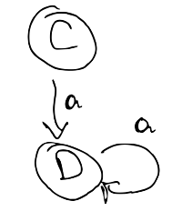
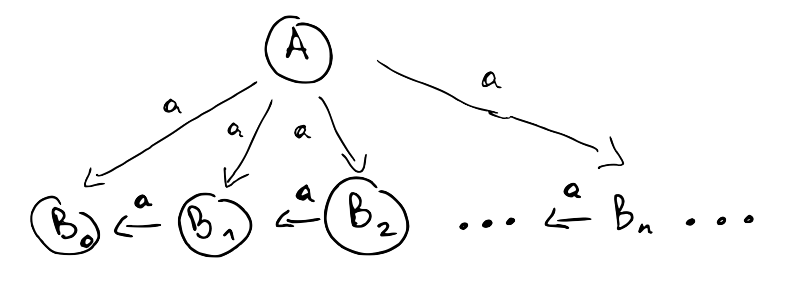

Simulations and Commuting Quantifiers
March, 2021
This note defines a notion of similarity for labelled-transition systems (LTS) and shows how, by placing certain finiteness conditions on the LTS, similarity can be iteratively computed. In the process, we will see how similarity can be a concrete example of the "trick" for commuting quantifiers described in Amin Timany's blog. The presentation is based on Davide Sangiorgi's excellent introduction to coinduction and bisimulation.
A labelled-transition system is a triple \((Pr, Act, \rightarrow)\), where \(Pr\) is the set of processes (states), \(Act\) is a set of actions (labels), and \( \rightarrow \subseteq Pr \times Act \times Pr \) is the transition relation. We will write \( P \rightarrow_{\mu} Q \) for \( (P, \mu, Q) \).
A simulation is a relation \( R \subseteq Pr \times Pr \) such that if \( (P, Q) \in R \), then for all \( P' \) such that \( P \rightarrow_{\mu} P' \), there exists a \( Q' \) such that \( Q \rightarrow_{\mu} Q' \) and \( (P', Q') \in R \).
Similarity, denoted by \( \le \), is the union of all simulations. When \( P \le Q \) we say that \( Q \) simulates \( P \) (note the order is reversed). For example, the following LTS models a two-phase commit (2PC) protocol with two clients, while keeping track of which clients have committed (C) or aborted (A). The transitions are unlabelled because we have only one action (e.g. \( \mu \)):

If we want to model the protocol at a higher level, we can decide to not keep track of the client state:

We then need a way to relate the two models: we can use similarity to that effect. We can see that \( Init \le Init' \), all the C and A states are simulated by Procc, \( Commit \le Commit' \), and \( Abort \le Abort' \). For example, the sequence \( [Init, C_1, A_2, Abort] \) is simulated by \( [Init', Procc, Procc, Abort'] \).
Working on the complete powerset lattice \( \mathcal{P}(Procc \times Procc) \), we can obtain similarity as the greatest fixpoint of a functional \( F : \mathcal{P}({Procc \times Procc}) \rightarrow \mathcal{P}({Procc \times Procc}) \) given by The intuition for \( F \) is that it gives us all pairs \( (P, Q) \) where \( Q \) can simulate \( P \) for one step and after that one step we end up in a pair of states in \( R \). \[ F(R) = \{ (P, Q) | \forall P', P \rightarrow_\mu P' \implies \exists Q'. Q \rightarrow_\mu Q' \land (P', Q') \in R \} \]
Fact 1. \( R \) is a simulation iff \( R \) is a post-fixpoint of \( F \) (i.e. \( R \subseteq F(R) \) ).
Corollary 2. similarity is F's greatest fixpoint (follows by Knaster-Tarski).
Moreover, we can stratify similarity through a family of relations \( \{ \le_n \} \) capturing similarity up to \(n\) steps:
- \( \le_0 = Pr \times Pr \)
- \( \le_{n + 1} = F(\le_n) \)
To compute similarity, we'd like to know that \( P \le Q \) iff \( P \le_n Q \) for all n; i.e. $$ \le = \bigcap_{i \ge 0} \le_i $$ If so, we could compute \( \le_0, \le_1, \ldots, \le_n, \ldots \) Since \( F \) is monotone, then we can stop computing as soon as we reach a fixpoint \( \le_n = F(\le_{n}) = \le_{n + 1} \). In that case $$ \le = \bigcap_{i \ge 0} \le_i = \le_n $$ The fixpoint algorithm can be implemented more or less verbatim (Scala source). For the 2PC models above, we indeed get that \( Init \le Init' \) as expected. The full relation is { A1 ≤ Init', A1 ≤ Procc, A2 ≤ Init', A2 ≤ Procc Abort ≤ Abort', Abort ≤ Commit', Abort ≤ Init' Abort ≤ Procc, C1 ≤ Init', C1 ≤ Procc, C12 ≤ Init', C12 ≤ Procc, C2 ≤ Init', C2 ≤ Procc, Commit ≤ Abort', Commit ≤ Commit', Commit ≤ Init', Commit ≤ Procc, Init ≤ Init', Init ≤ Procc }
Unfortunately the method above doesn't always work. In the example below, \( A \) we can take \( n \) a-steps for any \( n \), so \( C \le_n A \) and \( (C, A) \in \bigcap_{ i \ge 0} \le_i \). However, \( A \) cannot simulate \( C \) because \( C \) can take infinitely many steps whereas \( A \) needs to "commit" to one of the \( B_i \), and from then on it can only take a finite number of steps.
 To see what the problem is, it helps to try to carry out the proof that \( \le = \bigcap_{i \ge 0} \le_i \) and see where it breaks. For this, we need to show that \( \le \subseteq \bigcap_{i \ge 0} \) and \( \bigcap_{i \ge 0} \subseteq \le \). The first goal goes through without problems. Notice that $$ \begin{align} \le & \subseteq Pr \times Pr &= \le_0 \\ \le = F(\le) & \subseteq F(\le_0) &= \le_1 \\ \le = F(\le) & \subseteq F(\le_1) &= \le_2 \\ \ldots & & \end{align} $$ Using the fact that \( \le \) is a fixpoint and \( F \) is monotone we can proceed by induction to show that \( \le \subseteq \le_n \) for all \( n \), and the result follows.
It's the second goal that gives us trouble. We need to show that \( \bigcap_{i \ge 0} \le_i \subseteq \le \). Since similarity is the largest simulation, it's enough to show that \( \bigcap_{i \ge 0} \le_i \) is a simulation. That is, given that \( (P, Q) \in \bigcap_{i \ge 0} \le_i \) and assuming that \( P \rightarrow_\mu P' \), we have to show that there exists a Q' such that \( Q \rightarrow_\mu Q\ \) and \( (Q, Q') \in \bigcap_{i \ge 0} \le_i \). Because \( (P, Q) \in \bigcap_{i \ge 0} \le_i \) we know that for each \(i\) we can find a \( Q'_i \) such that \( Q \rightarrow_\mu Q'_i \) and \( (P', Q'_i ) \in \le_i \). That is, we know $$ \forall i. \exists Q'. Q \rightarrow_\mu Q' \land (P', Q') \in \le_i $$ But we need $$ \exists Q'. \forall i. Q \rightarrow_\mu Q' \land (P', Q') \in \le_i $$ Of course, we know we can't simply swap the quantifiers, which is consistent with the counterexample we saw above. In the counterexample, process \( A \) had infinitely-many outgoing transitions, so one (not very intuitive) question to ask is whether restricting the LTS to being finitely branching solves the problem (it does).
Definition 3. An LTS is finitely branching if for every process \( P \) the set \( \{ (\mu, Q) | P \rightarrow_\mu Q \in \rightarrow \} \) is finite.
We now finally get to the meat of the matter: if the LTS is finitely branching, then we can exchange the quantifiers.
Lemma 4. If the underlying LTS is finitely branching, then $$ \forall i. \exists Q'. Q \rightarrow_\mu Q' \land (P', Q') \in \le_i $$ implies $$ \exists Q'. \forall i. Q \rightarrow_\mu Q' \land (P', Q') \in \le_i $$ Proof. Let \( M = \{ Q\ | Q \rightarrow_\mu Q' \in \rightarrow \} \). Since the LTS is finitely branching, then \( M \) is finite. From the assumption, we can construct a function \( f(i) = Q_i \) that assigns to every index \( i \) and element \( Q_i \in M \). Now define the fiber \( f^{-1}(e) \) of an element \( e \) to be the inverse image of the singleton set containing \( e \): $$ f^{-1}(Q') = \{ i | f(i) = Q' \} $$ Notice that the set of natural numbers can be partitioned as the union of the fibers of elements of \( M \): $$ \mathbb{N} = \bigcup_{Q' \in M} f^{-1}(Q') $$ Now look at the cardinalities on each side of the equation above. \( \mathbb{N} \) is infinite, and there are finitely many \( Q' \in M \). This means that at least one of the elements has an infinite fiber. Let \( Q' \) be one such element. Now consider an arbitrary index \( i \). Since \( f^{-1}(Q') \) is infinite, there exists a \( j > i \) such that \( j \in f^{-1}(Q') \), meaning that \( f(j) = Q' \). In turn, this means that $$ Q \rightarrow_\mu Q' \land (P', Q') \in \le_i $$ Since \( i \) was arbitrarily chosen, we get $$ \forall i, Q \rightarrow_\mu Q' \land (P', Q') \in \le_i $$ which is allows us to instantiate the existential in our goal. \( \blacksquare \)
The abstract view of Lemma 4 above is given in Theorem 1 (Regular Quantification) of Amin's blog post:
Let A be a regular ordinal, [...] and B be a set with strictly smaller cardinality [...]. The following holds for any \( P \) that is downwards closed with respect to the relation on A: $$ (\forall x \in A. \exists y \in B. P(x, y) ) \implies \exists y \in B. \forall x \in A. P(x, y) $$
Contrast with a version of Lemma 4 massaged to highlight the parallels $$ ( \forall i \in \mathbb{N}. \exists Q' \in succ(Q, \mu). \mathcal{L}(i, Q') ) \implies \exists Q' \in succ(Q, \mu). \forall i \in \mathbb{N}. \mathcal{L}(i, Q') $$ where $$ \begin{align} succ(Q, \mu) &= \{ Q' | Q \rightarrow_\mu Q' \} \\ \mathcal{L}(i, Q') &= (P', Q') \in \le_i \end{align} $$
In order to use Theorem 1, we need
- \( \mathbb{N} \) must be a regular ordinal. For our purposes, this means the following: suppose we have an unbounded subset \( S \) of \( \mathbb{N} \) (i.e. for any natural number \( n \) no matter how large, we can always find an element \( e \in S \) such that \( e > n \)). Then we need to show there exists an injective function \( f : \mathbb{N} \rightarrow S \). We can recursively construct one such function. We will set \( f(0) \) to an arbitrary element of \( S \). For the recursive case, we are given \( f(n - 1) \) and have to define \( f(n) \). Since \( S \) is unbounded, there's an element \( e \in S \) such that \( e > f(n - 1) \). We set \( f(n) = e \). It's easy to see that if \( n < m \) then \( f(n) < f(m) \); this means \( f \) is injective as needed. \( \blacksquare \)
- \( succ(Q, \mu) \) must have strictly smaller cardinality than \( \mathbb{N} \). This is easy, because since the LTS is finitely branching \( succ(Q, \mu) \) must be finite, and \( \mathbb{N} \) is infinite. \( \blacksquare \)
- \( \mathcal{L}(i, Q') \) is downwards-closed This means that \( n \ge m \land \mathcal{L}(n, Q') \implies \mathcal{L}(m, Q') \) . Here we need to show that if \( n \ge m \) then $$ P' \le_n Q' \implies P' \le_m Q' $$ That is, if \( Q' \) can simulate \( P' \) for \( n \) steps, then it can simulate it for \( m \) steps. This makes intuitive sense, and follows from the fact that functional \( F \) used to generate \( \le_n \) is monotone. \( \blacksquare \)
References
- Sangiorgi, Davide. Introduction to Bisimulation and Coinduction. Cambridge University Press, 2011.
- Timany, Amin. Commuting Quantifiers. https://tildeweb.au.dk/au571806/blog/commuting_quantifiers/.